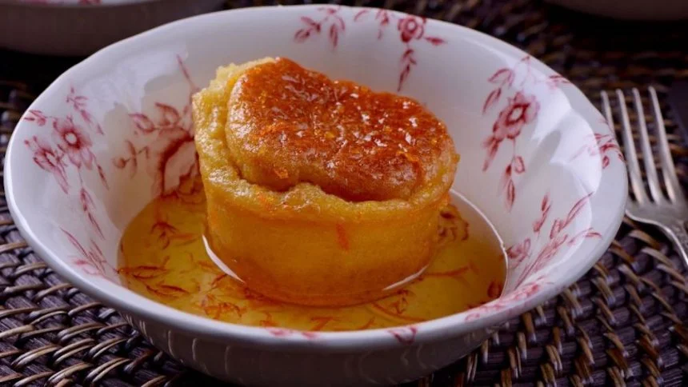

← Volver al módulo 1

Baba al Ron
Deliciosos bizcochos remojados en ron y decorados con crema, frutas y un toque de azúcar.
Ingredientes
- Almíbar de canela
- Cáscara de una naranja
- Azúcar a gusto
- Canela molida 1 cucharada
- Ron c/n
Decoración
- 200 ml de crema de leche
- 2 cucharadas de azúcar
- Cherry o arándano
- Hoja de menta
Preparación
Remojo
Realizamos mise en place.
Llevar el agua y el azúcar en una olla hasta que rompa hervor.
Añadimos el ron cuando esté hervido c/n.
Bañamos la masa 2 veces.
Decoración
Batimos la crema de leche con el azúcar y colocamos en una manga pastelera.
Hacemos unos moños y los colocamos por encima de la masa.
Colocamos las frutas sobre los moños.
Reservamos para emplatar.